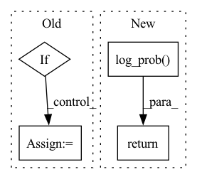

Pattern ID :3940
Before Change
else:
_alpha = self._alpha
_beta = self._beta
if not self.is_reparameterized:
_alpha.requires_grad = False
_beta.requires_grad = False
raise NotImplementedError()After Change
_alpha = self._alpha
_beta = self._beta
return torch.distributions.beta.Beta(_alpha, _beta).log_prob( sample) In pattern: SUPERPATTERN
Frequency: 3
Non-data size: 4
Instances Fragment ID: 14808169
Project Name: thuwzy/zhusuan-pytorch
Commit Name: 3ea87120b66af05a52fe20e2e75e5ce1ea2e7c7b
Time: 2021-11-22
Author: wang-zy21@mails.tsinghua.edu.cn
File Name: zhusuan/distributions/beta.py
M Class Name: Beta
N Class Name: Beta
M Method Name: _log_prob(2)
N Method Name: _log_prob(2)
M Parent Class: Distribution
N Parent Class: Distribution
M File Name: zhusuan/distributions/beta.py
N File Name: zhusuan/distributions/beta.py
M Start Line: 73
M End Line: 77
N Start Line: 60
N End Line: 70
Before Change
def sample(self, parameters, deterministic):
alpha, beta = self._convert_parameters(parameters)
if deterministic:
// good solution: return median
// but median can be nan (if alpha == beta == 1.0)
mean = alpha / (alpha + beta)
median = (alpha - 1.0) / (alpha + beta - 2.0)
mask = torch.isnan(median)
z = torch.masked_scatter(median, mask, mean)
else:After Change
z = alpha / (alpha + beta)
else:
z = distribution.sample()
log_prob = distribution.log_prob( z)
sample = self._agent_to_env(z)
return sample, log_prob.sum(-1)
def log_prob(self, parameters, sample):
// do not use rescaling here Fragment ID: 14808168
Project Name: cherrypiesexy/imitation_learning
Commit Name: 5f3e6db6dccdade38873d9b13343ebaa7405d616
Time: 2020-08-22
Author: dmitry.akimov@giant.ai
File Name: algorithms/distributions.py
M Class Name: Beta
N Class Name: Beta
M Method Name: sample(3)
N Method Name: sample(3)
M Parent Class: Distribution
N Parent Class: Distribution
M File Name: algorithms/distributions.py
N File Name: algorithms/distributions.py
M Start Line: 92
M End Line: 103
N Start Line: 96
N End Line: 104
Before Change
return one_hot
def log_prob(self,x):
if len(x.shape) == 1:
x = x.unsqueeze(0)
logits = self.logits.broadcast(x.shape)
indices = jt.argmax(x, dim=-1)[0]
return logits.gather(1, indices.unsqueeze(-1)).reshape(-1)After Change
def log_prob(self, x):
x = jt.argmax(x, dim=-1)[0]
return Categorical.log_prob( self, x)
def entropy(self):
p_log_p = self.logits * self.probs
return -p_log_p.sum(-1) Fragment ID: 14808170
Project Name: jittor/jittor
Commit Name: 4ec2bfacb22034e3b3cddbd1d73e3b9c45accecb
Time: 2021-06-17
Author: randonlang@gmail.com
File Name: python/jittor/distributions.py
M Class Name: OneHotCategorical
N Class Name: OneHotCategorical
M Method Name: log_prob(2)
N Method Name: log_prob(2)
M Parent Class:
N Parent Class:
M File Name: python/jittor/distributions.py
N File Name: python/jittor/distributions.py
M Start Line: 52
M End Line: 56
N Start Line: 41
N End Line: 42